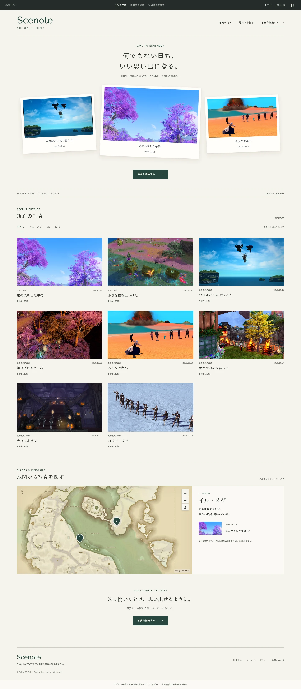
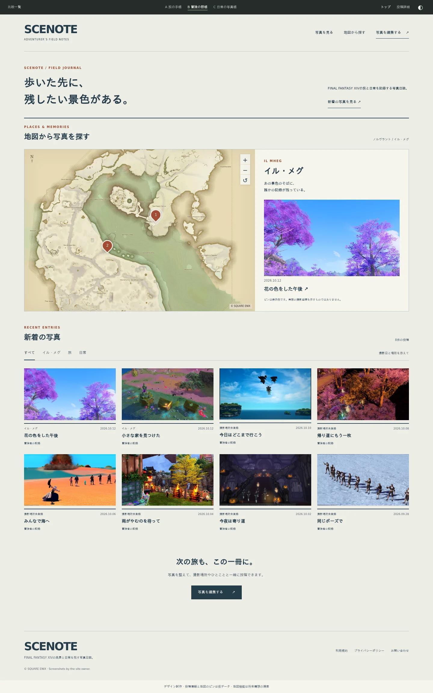
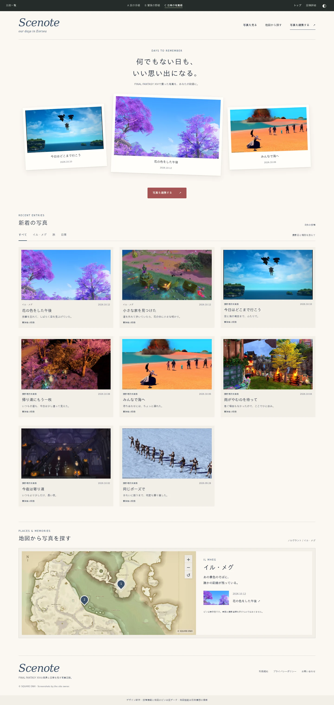

A
旅の手帳
写真と短い記録が収まる、静かな日誌。

旅の手帳、冒険の野帳、日常の写真帳。
同じ写真を使った3案で、トップと投稿詳細を比較できます。
写真と短い記録が収まる、静かな日誌。

土地と写真を行き来する、旅の記録。

誰かと過ごした日を綴じる、写真帳。

各HTMLで、案と画面の切り替え、ライト／ダークの切り替え、写真の絞り込み、地図のピン選択と拡大、投稿詳細への移動、写真の拡大を試せます。ブラウザの幅を狭めるとスマートフォン向けの配置に変わります。
地図は実際のFFXIVのイル・メグのエリアマップを使用しています。撮影場所の登録は現行機能、地図表示は将来構想の提案です。投稿情報とピンの位置は仮データで、実際の撮影座標を示しません。
写真は運営者の手元のスクリーンショットを使用。写真の縦横比を保持しています。